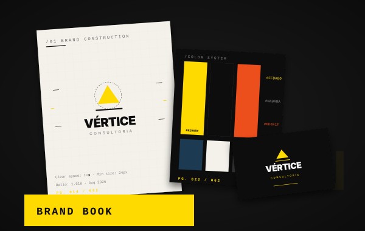

Branding & Identidade Visual
Construímos marcas com posicionamento claro, identidade flexível e linguagem visual coerente — do logo ao sistema completo de marca.
- Posicionamento & Direção de Marca
- Logo & Sistema Visual
- Manual e Aplicações